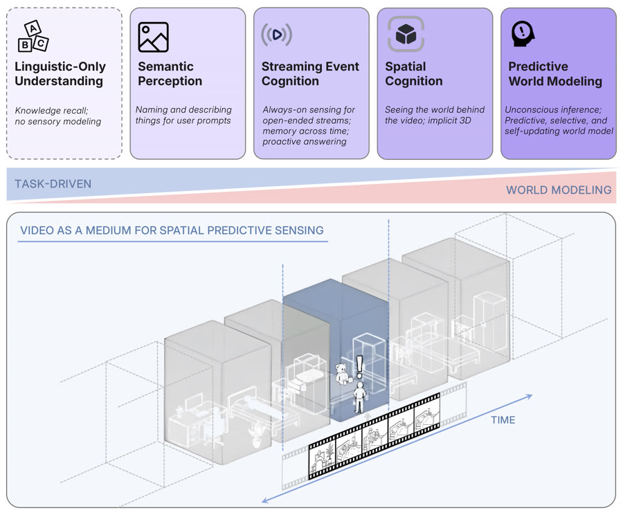
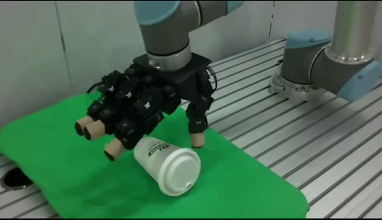

I study how models can watch, track, and reason over long, streaming video.
I am an undergraduate in the Yao Class at the Institute for Interdisciplinary Information Sciences (IIIS), Tsinghua University. Since 2025 I have been a research assistant at New York University with Prof. Saining Xie, working on long-video understanding and interleaved chain-of-thought reasoning for streaming video. Before that, I worked on robot learning with Prof. Huazhe Xu at Tsinghua.
News
- Received the Yao Award Recognition Prize from IIIS.
- Cambrian-S accepted to ICLR 2026.
- Joined Saining Xie's group at NYU as a research assistant.
- 4D Visual Pre-training for Robot Learning accepted to ICCV 2025.
Publications

Honors
- Yao Award Recognition Prize, IIIS, Tsinghua University
- Tsinghua Academic Excellence Scholarship (Tsinghua Friends – ByteDance Group)
- Mr. and Mrs. Huang Yicong Scholarship, Tsinghua University
- Second-class Freshman Scholarship, Tsinghua University
- Gold Medal, China National Olympiad in Informatics (NOI)
Beyond Research
I am an amateur naturalist — I like spending time outdoors with birds and plants.
- 🐦Bird watching
- 🌿Plants & nature
- 📷Photography — see some photos
- 🎷Jazz
- 🏸Badminton & table tennis